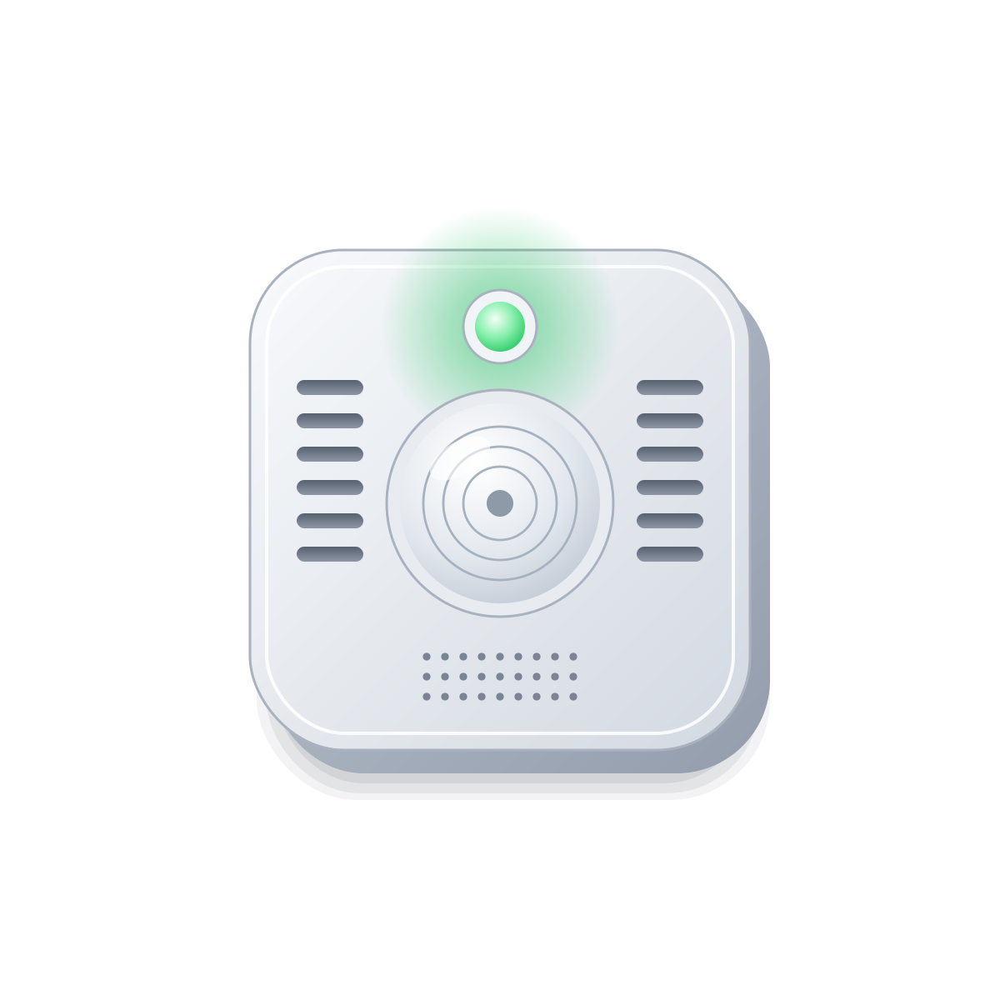

Environment Monitor
One per room. It watches air quality and presence across the whole space.
- Air quality in ppm, measured continuously and checked against your environmental profile.
- Motion detection records presence in the room without raising an alert.
- A status light and a buzzer warn people on site as soon as a reading turns critical.
- The buzzer can be silenced from the app while the light keeps showing the state.
- Size
- 110 × 110 × 45 mm
- Power
- 5 V USB-C
- Mounting
- Wall or ceiling, about 2.2 m high